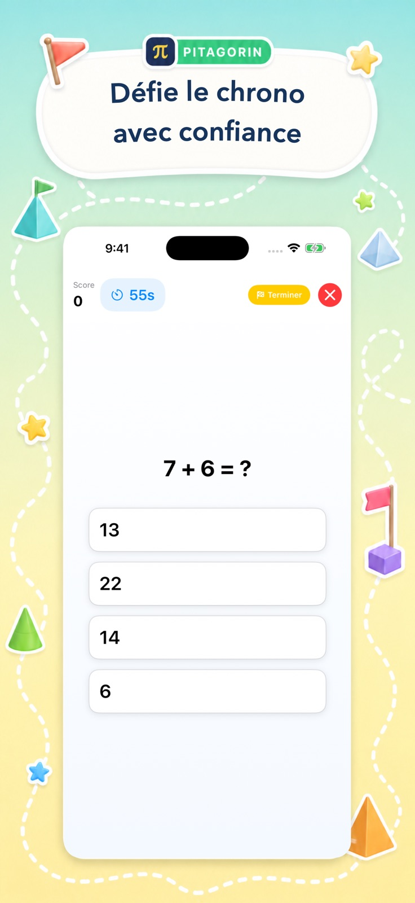
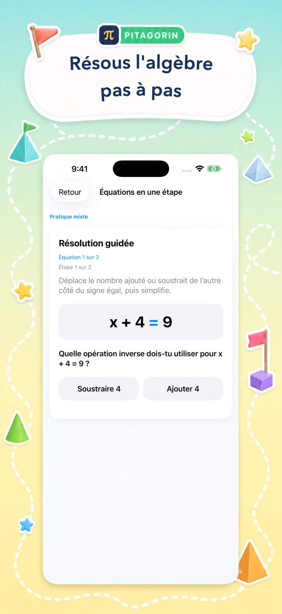

Jeux de calcul
Entraîne-toi à l’addition, la soustraction, la multiplication, la division, les fractions, les décimaux, les pourcentages, les puissances, les racines et plus encore.
Dans Pitagorin
Choisis un jeu rapide, une explication calme, les tables, ton propre examen, un défi de raisonnement ou l’algèbre guidée.

Choisis ton parcours
Chaque fonction répond à un besoin précis avec un choix d’intensité, de sujet et d’accompagnement.
Entraîne-toi à l’addition, la soustraction, la multiplication, la division, les fractions, les décimaux, les pourcentages, les puissances, les racines et plus encore.
Travaille sans chronomètre, saisis ta réponse et ouvre des aides visuelles propres à chaque opération.
Apprends les tables de 1 à 12. Pitagorin Pro ajoute Révision intelligente et Sprint de fluidité.
Crée un examen avec les opérations et la difficulté de ton choix, enregistre le résultat et revois les explications.
Atteins un nombre cible ou équilibre les deux côtés d’une équation avec des indices et l’annulation.
Progresse à travers les bases, équations, proportions, relations linéaires, systèmes, exposants et fonctions.
Le cycle d’apprentissage
Le retour rapide entretient l’élan et les explications permettent de vraiment comprendre.


Déroulement d’une séance
L’action suivante reste claire pour un enfant autonome comme pour un adulte qui reprend les maths.
Commence à pratiquer
Pitagorin est gratuite sur iPhone et iPad, avec des fonctions Pro facultatives dans l’app.